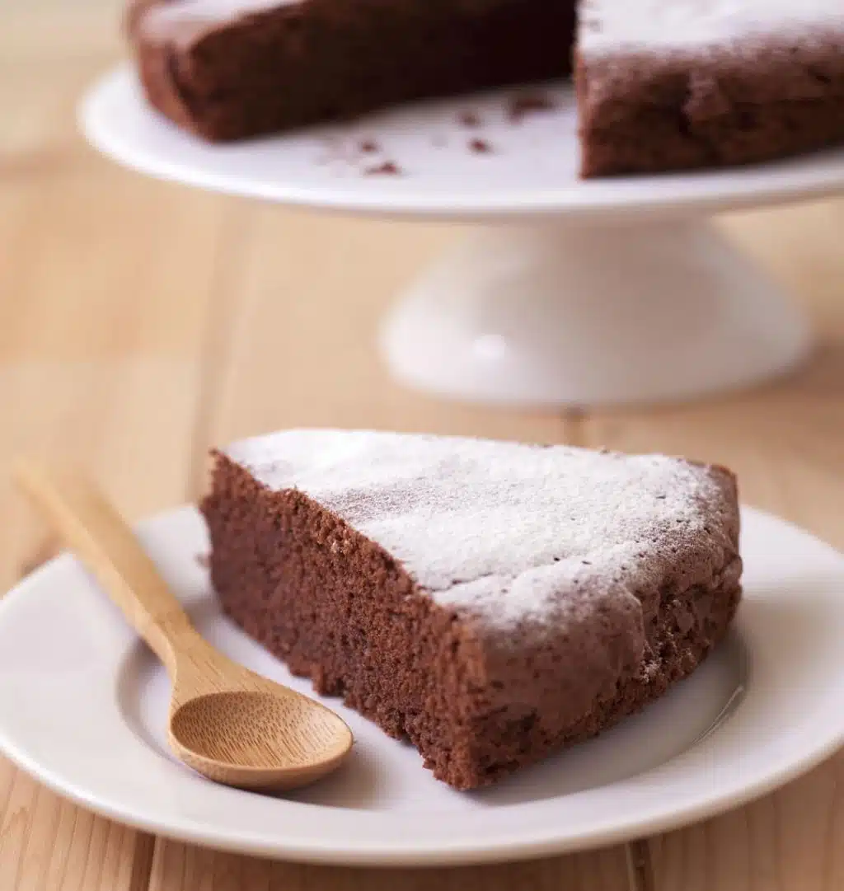

Cliquez pour aller à la fin de la page
VOUS ËTES REVENU EN HAUT DE LA PAGE web
Recette de cuisine"

Réalisation
Très facile
Préparation : 20 min
Cuisson : 30 min
Ingrédients
Pour 8 à 10 personnes
- 200 g de chocolat noir à 52% de cacao
- 125 g de beurre doux (ou demi-sel pour les gourmands)
- 100 g de farine de blé T55 ou T65
- 1 sachet de levure chimique ou poudre à lever (10 g)
-
- 4 gros oeufs bio
- 200 g de sucre en poudre (ou plutôt 150 g d'après les commentaires)
- 1 pincée de sel
Cliquez ici pour remonter en haut de votre page
Fin de la page
Cliquez ici pour revenir à votre page Web initial